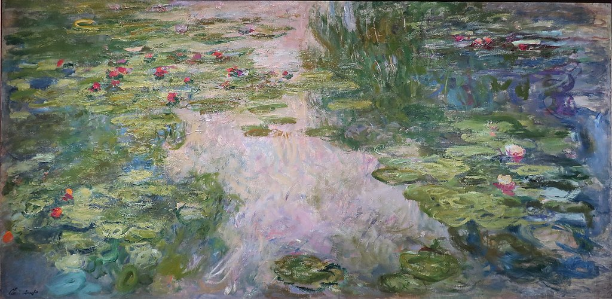

<head>
<meta charset="UTF-8" />
<meta name="keywords" content="drawing, painting" />
<meta name="description" content="drawings by Sunjy" />
<title>Sunjy</title>
<link rel="shortcut icon" type="image/x-icon" href="../../mImages/mCommon/favicon.ico" media="screen" />
<link rel="stylesheet" type="text/css" href="../../mCsses/mCommon/mCssA.css" />
<link rel="stylesheet" type="text/css" href="../../mCsses/mCommon/mCssB.css" />
<link rel="stylesheet" type="text/css" href="../../mCsses/mCommon/mCssC.css" />
<link rel="stylesheet" type="text/css" href="../../mCsses/mCommon/mCssD.css" />
<link rel="stylesheet" type="text/css" href="../../mCsses/mContent/mCssA.css" />
<link rel="stylesheet" type="text/css" href="../../mCsses/mContent/mCssB.css" />
<link rel="stylesheet" type="text/css" href="../../mCsses/mContent/mCssC.css" />
<link rel="stylesheet" type="text/css" href="../../mCsses/mContent/mCssD.css" />
</head>
<script type="text/javascript" src="../../mScripts/mContent/mContentAA.js" /></script>
<script type="text/javascript" src="../../mScripts/mContent/mContentAB.js" /></script>
<script type="text/javascript" src="../../mScripts/mContent/mContentAC.js" /></script>
<script type="text/javascript" src="../../mScripts/mContent/mContentAD.js" /></script>
<script type="text/javascript"></script> 
<script type="text/javascript">
document.write('<div class="mImgAbsolute"></div>');
/*
document.write('<p class="mFontSizeBColor" />From a white paper...</p>');
document.write('<table class="center"><tr><td>');
document.write('');
document.write('</td></tr></table>');
*/
</script>


<script type="text/javascript">
document.write('<p class="mFontSizeBColor" />Water Lilies</p>');
document.write('<p class="mFontSizeSColor" />By Claude Monet. In “Water Lilies,” Claude Monet depicts his water-lily pond, from his garden in Giverny. Monet captured the continually changing qualities of light, color, water, sky, and lilies by dissolving all the elements in what he expressed as:<br><br>“the refuge of peaceful meditation in the center of a flowering aquarium.”<br><br>Claude Monet painted nearly 250 paintings in his series of “Water Lilies.”  The paintings depict Monet’s flower garden at his home, which was the primary focus of Monet’s artistic endeavors during the last thirty years of his life. Monet painted many of his later works while suffering from cataracts.<br><br>This painting belongs to the last of three series of works depicting the play of light on the pond. With loose, curving lines and tightly knitted strokes of color, Monet captured a moment in time in the life of the ever-changing reflective body of water. His “Water Lilies” series of paintings can be found in many museums across the globe.</p>');
document.write('<table class="center" /><tr><td>');
document.write('<br>“the refuge of peaceful meditation in the center of a flowering aquarium.”<br><br>Claude Monet painted nearly 250 paintings in his series of “Water Lilies.”  The paintings depict Monet’s flower garden at his home, which was the primary focus of Monet’s artistic endeavors during the last thirty years of his life. Monet painted many of his later works while suffering from cataracts.<br><br>This painting belongs to the last of three series of works depicting the play of light on the pond. With loose, curving lines and tightly knitted strokes of color, Monet captured a moment in time in the life of the ever-changing reflective body of water. His “Water Lilies” series of paintings can be found in many museums across the globe." />');
document.write('</td></tr></table>');
</script>


